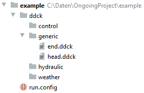
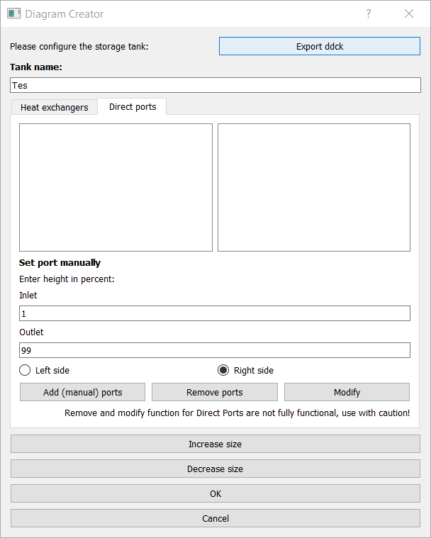
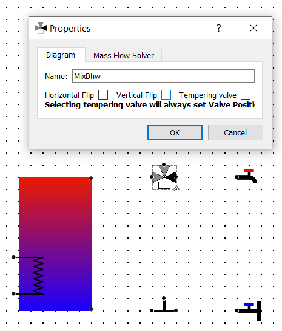
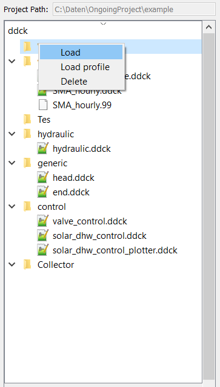
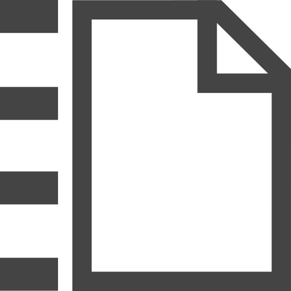

Complete procedure example¶
In the following the step by step procedure for starting with an empty diagram to launching a TRNSYS simulation is presented. The full diagram of the demonstrated example looks like:

1. Initialize a project¶
When a new project is initialized the following dialogue is opened to build a folder for the project:

This creates the following file tree:
2. Build a diagram¶
To make the placement of the components easier the snap grid is toggled.
(i) Set up storage tank¶
First, a storage tank is dropped in the diagram. This opens the following dialogue:

To make the diagram better arranged, the size of the storage is increased. Furthermore, its name is changed to ‘’Tes’’. Then a heat exchanger with its input at 40 % and its output at 10 % height of the storage tank on the left side is added and named ‘’Tes_Hx’’:

Additionally, a pair of direct ports is added on the right side with the input at 1 % and its output at 99 % height of the storage tank:
(ii) Place components¶
Next, the components are placed one by one. They can be rotated when they are right-clicked, which is needed in the current example for the pump.

Furthermore, when double-clicking components they can be re-named, which will also change the name of their respective folder in the ddck-directory.

When a three-way valve is placed, the darker connector indicates the port through which there is always flow, when there is flow at all. In our case this needs to be towards the warm water tap, since the three-way valve placed is supposed to be the mixing valve for the warm water demand. To access the valve settings the component is simply double-clicked. In the opened dialogue “vertical flip” is ticked for the correct orientation of the valve and “tempering valve” to make it one.

{kind=link}
{kind=link}
{kind=link}
{kind=link}
3. Load ddck files¶
Many components need to be represented by ddck- or other files in the simulation. These files need to be loaded to the individual component folders in the ddck-directory. This is done by right-clicking the respective folder in the file tree.
{kind=link}
4. Export files and launch TRNSYS simulation¶
Once the component files are loaded, different files needed for the simulation can be exported from the diagram.
(i) Export Tes.ddck¶
First, the ddck of the thermal storage tank needs to be exported. This is done by opening the storage tank dialogue by double-clicking the component and then hitting the respective button on this dialogue.
(ii) Export hydraulic.ddck¶
Next, the ddck representing the hydraulics of the system needs to be exported. This is done by hitting the respective button in the tool bar.

(iii) Export dck¶
When all files needed are loaded and/or exported the dck-file (TRNSYS) can be built. Either this is done without launching a simulation directly afterwards to just generate the file by pressing the respective button in the tool bar

or a simulation is launched directly through hitting
{kind=link}